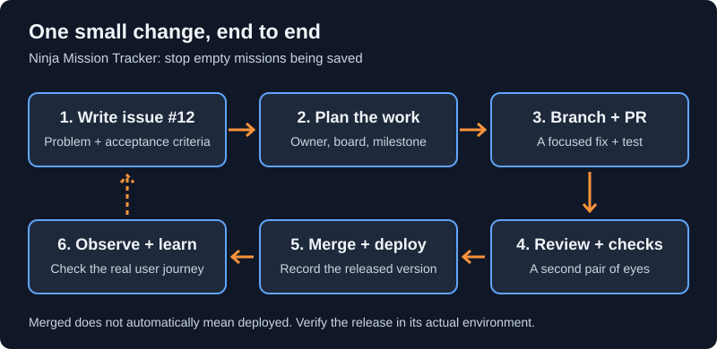
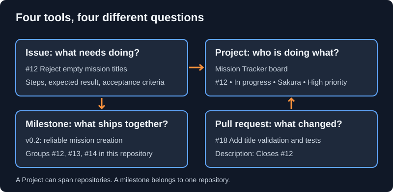
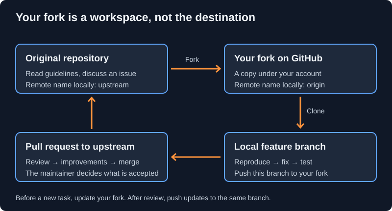
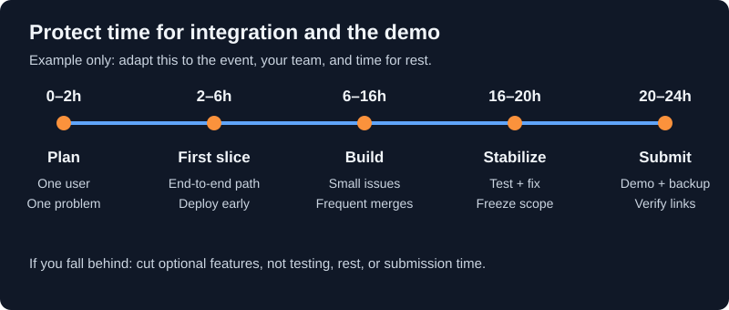

Introduction to Git and GitHub
The Problem Without Version Control
Meet Our Development Team
Three skilled developers from the Hidden Leaf Village have decided to build a Ninja Mission Tracking system together:
Naruto Uzumaki
Team Lead
Manages main codebase
Sasuke Uchiha
Backend Developer
Handles core logic
Sakura Haruno
Frontend Developer
Works on UI/UX
Problems Without Git
Initially, they try to manage their code by saving files on their computers and sharing via email or USB drives. Here are the problems they face:
Problem 1: Lost Work
Naruto Uzumaki creates a file called
mission.txt with some code. Next day, he makes
changes and saves the file again. Now the original version is
gone forever. If the new code has bugs, he cannot go back to the
working version.
Problem 2: Messy File Names
To avoid losing old versions, they start creating multiple copies:
app.txtapp_v2.txtapp_final.txtapp_final_REALLY_FINAL.txtmission_naruto_fixed_v3.txt
This becomes impossible to manage!
Problem 3: Collaboration Chaos
Sasuke Uchiha emails his homepage.txt file to
Naruto Uzumaki. Sakura Haruno also emails her version of
homepage.txt. Now Naruto Uzumaki has two files with
the same name but different content. Which one is correct? How
to combine them?
Problem 4: No History
When a bug appears in the code, they cannot see who made what changes and when. Debugging becomes very difficult.
Problem 5: Overwriting Work
Naruto Uzumaki and Sasuke Uchiha both edit
styles.txt. When they share files, one person's
work gets completely overwritten and lost.
Problem 6: No Backup
If Naruto Uzumaki's laptop crashes or gets stolen, all the code is lost forever. There is no backup.
Without Git - The Chaos:
Naruto's Computer: Sasuke's Computer: Sakura's Computer:
mission.txt mission_sasuke.txt mission_sakura.txt
app_v2.txt homepage.txt server_code.txt
app_final.txt homepage_new.txt database.txt
app_FINAL2.txt styles.txt
styles_updated.txt
Problems:
- No sync between computers
- No history of changes
- No way to merge work
- Files sent via email/USB
- Easy to lose work
The Solution: Git
Git is a Version Control System that solves all these problems. It is a tool that tracks every change made to your files, who made the change, and when it was made.
How Git Helps:
- Snapshots: Git saves complete snapshots of your project at different points in time
- Time Travel: You can go back to any previous version instantly
- Collaboration: Multiple people can work on the same files without conflicts
- History: See exactly who changed what, when, and why
- Branching: Work on new features without breaking the main code
- Backup: Store code safely in the cloud using GitHub
Git vs GitHub
Many beginners confuse Git and GitHub. They are different things:
Git is a program you install on your computer. It tracks changes to your files locally on your machine.
GitHub is a website (github.com) where you can upload and store your Git projects online. Think of it like Google Drive but specifically designed for code.
Simple Analogy:
- Git is like your personal notebook where you write your work and keep every draft
- GitHub is like a library where you store a copy of your notebook so others can read it and contribute
You can use Git without GitHub (working locally only). But GitHub needs Git to function. In this guide, you will learn both.
Installing Git
Before you can use Git, you need to install it on your computer. The installation process is different for Windows, Mac, and Linux.
Installing on Windows
-
Open your web browser and go to
https://git-scm.com - Click the big Download for Windows button
-
Once the file downloads, run the installer (it will be named
something like
Git-VERSION-64-bit.exe; VERSION is a placeholder, not a version to type or search for) - Click Next on all the screens - the default settings are perfect for beginners
- Click Install and wait for it to finish
- Click Finish when done
After Installing on Windows
You now have a program called Git Bash. This is a special terminal window where you will type all your Git commands.
To open it: Click the Start Menu and search for "Git Bash"
Installing on Mac
Mac computers often come with Git pre-installed. Let's check:
-
Open the Terminal application (press
Cmd + Space, type "Terminal", and press Enter) - Type this command and press Enter:
git --version
If you see a version number like git version 2.39.0,
Git is already installed! Version numbers shown in this guide are
illustrative, not the latest release. Install a current supported
version from the official site or your operating system's package manager.
If Git is not installed, your Mac will automatically show a popup asking you to install it. Click Install and follow the prompts.
Installing on Linux
Open your terminal and run these commands:
For Ubuntu/Debian:
sudo apt update
sudo apt install gitFor Fedora:
sudo dnf install gitVerifying Installation
After installing, let's verify that Git is working correctly:
- Open your terminal (Git Bash on Windows, Terminal on Mac/Linux)
- Type this command and press Enter:
git --versionYou should see output like:
git version 2.43.0If you see a version number, congratulations! Git is installed and working.
Important Note About Commands
In many tutorials, you will see commands written with a dollar
sign like this: $ git --version
Do not type the dollar sign! It just means "this is a terminal command". Only type what comes after it.
First-Time Setup
Before using Git for the first time, you need to tell it your name and email address. This is important because every change you make will be recorded with your name.
Why is This Needed?
When you save a snapshot of your code (called a "commit"), Git records:
- What changed
- When it changed
- Who made the change
This is very important when working in a team. Everyone can see who did what and when.
Setting Your Name
Open your terminal (Git Bash on Windows) and type this command. Replace "Naruto Uzumaki" with your actual name:
git config --global user.name "Naruto Uzumaki"Press Enter. You will not see any output - that is normal.
Setting Your Email
Now set your email address. Use the same email you will use for your GitHub account:
git config --global user.email "gautam@example.com"What Does --global Mean?
The --global flag means this setting applies to all
your Git projects on this computer. You only need to do this
once.
Without --global, the setting would only apply to
one specific project.
Checking Your Settings
--global changes your user-wide defaults. Inside a particular repository, omit it to set a project-specific name or email, for example for work versus personal contributions. Check git config --show-origin user.email to see where the effective value comes from.
This guide uses main as the default branch name. To use it for new repositories, run git config --global init.defaultBranch main. This does not rename branches in existing repositories. After cloning, follow that repository's actual default branch name.
To confirm everything was saved correctly, type:
git config --listYou will see a list of settings. Look for these two lines:
user.name=Naruto Uzumaki
user.email=gautam@example.comIf you see your name and email, you are all set!
Example: Our Team Sets Up Git
Naruto's computer:
git config --global user.name "Naruto Uzumaki"
git config --global user.email "naruto@leaf.ninja"Sasuke's computer:
git config --global user.name "Sasuke Uchiha"
git config --global user.email "sasuke@leaf.ninja"Sakura's computer:
git config --global user.name "Sakura Haruno"
git config --global user.email "sakura@leaf.ninja"Now when each person makes changes, Git will record who made them.
Key Concepts
Before learning Git commands, you need to understand some important terms. These words will appear constantly when working with Git.
Repository
A repository (also called a
repo) is a project folder that Git is tracking.
It contains all your files plus a hidden folder called
.git where Git stores the history.
Example
Naruto Uzumaki creates a folder called
mission-tracker for the project. When he tells Git
to track this folder, it becomes a repository.
Commit
A commit is a saved snapshot of your project at one specific point in time. When you make a commit, you are telling Git: "Save this exact version forever."
Every commit has:
-
A unique ID - A long code like
a1b2c3d4that identifies this snapshot - A message - A short description you write explaining what changed
- Author - Who made the commit
- Date - When it was made
Good commit messages look like:
- "Add login page"
- "Fix calculation error in score"
- "Update homepage design"
Branch
A branch is like a parallel copy of your project where you can experiment without affecting the main code.
Your main project lives on the main branch (sometimes
called master). If you want to try a new feature, you
create a new branch, work there, and if it works, you bring it
back to main. If it fails, you just delete the branch.
main branch: A --- B --- C --- D
\
feature branch: E --- F
Merge
When you finish working on a branch and want to add your work back into the main project, you merge the branches together. Git combines the changes automatically.
Remote
A remote is a version of your repository stored somewhere else - usually on GitHub. The remote acts as your online backup and allows you to share your code with others.
By convention, the main remote is named origin.
Clone
Cloning means downloading a complete copy of a repository from GitHub to your computer, including all files and the entire history of changes.
Example: Our Team's Repository
Naruto Uzumaki creates a repository called
mission-tracker. This repository has:
- A
mainbranch where the working code lives - Multiple commits showing the history of changes
- A remote on GitHub where the code is backed up
Sasuke Uchiha creates a feature-login branch to work
on the login page without breaking the main code.
Sakura Haruno clones the repository from GitHub to her computer so she can work on it too.
The Three Stages of Git
This is the MOST IMPORTANT concept in Git. Understanding these three stages will make everything else make sense.
Overview
Every file in your Git project exists in one of three states at any given time:
1. Working Directory → 2. Staging Area → 3. Repository (where you edit) (files ready to save) (permanently saved)
Stage 1: Working Directory
This is simply the folder on your computer where your project files live. When you create a new file, edit an existing one, or delete something, those changes happen in the Working Directory.
Git can see that changes happened, but it has not saved anything yet.
Think of it like this:
Writing on a whiteboard - the words are there for now, but they are not permanent. Anyone could erase them.
Example: Naruto Uzumaki creates a new file called
notes.txt and writes some text in it. This file is in
the Working Directory.
# Check what changed
git status
Untracked files:
notes.txtStage 2: Staging Area
The Staging Area (also called the Index) is a preparation zone. Before saving a snapshot, you pick and choose which changed files to include.
This gives you fine control - maybe you changed 5 files but only want to save 2 of them in this snapshot.
Think of it like this:
Preparing an envelope to mail - you have decided what goes inside, but you have not sealed and sent it yet.
Example: Naruto Uzumaki decides to stage
notes.txt:
# Add file to staging area
git add notes.txt
git status
Changes to be committed:
new file: notes.txtStage 3: Repository
Once you commit, Git permanently records a snapshot of all staged
files into the repository. This is stored inside a hidden folder
called .git inside your project.
From this point on, this version exists forever in Git's memory - you can always come back to it.
Think of it like this:
Sealing the envelope and locking it in a safe. It is permanent and cannot be changed.
Example: Naruto Uzumaki commits the staged file:
# Commit with a message
git commit -m "Add notes file"
[main a1b2c3d] Add notes file
1 file changed, 1 insertion(+)Complete Example
Let's see all three stages in action with our cricket team:
# Naruto creates a new file (Working Directory)
# He opens a text editor and creates: score.txt
# Content: "Team A: 250 runs"
# Check status
git status
Untracked files:
score.txt
# Move to Staging Area
git add score.txt
# Check status again
git status
Changes to be committed:
new file: score.txt
# Commit to Repository
git commit -m "Add initial score"
[main b2c3d4e] Add initial score
1 file changed, 1 insertion(+)
# Check status one more time
git status
nothing to commit, working tree cleanWorking with Multiple Files
You can stage multiple files at once:
# Stage specific files
git add file1.txt file2.txt file3.txt
# Stage ALL changed files
git add .
# Then commit them all together
git commit -m "Add multiple files"Important Rule
You must always do git add before
git commit. If you skip the add step, nothing gets
committed because the Staging Area is empty.
Basic Git Commands
These are the essential commands you will use every day when working with Git.
git init - Start Tracking a Folder
This command turns a normal folder into a Git repository. Run it once inside the folder you want to track.
# Navigate to your project folder
cd school-project
# Initialize Git
git init
Initialized empty Git repository in /school-project/.git/
Git creates a hidden .git folder inside. This is
Git's database - do not delete or edit it manually.
git status - Check What Changed
This is the command you will use most often. It shows you which files have been changed, which are staged, and which are not being tracked yet.
git statusgit add - Stage Your Changes
Move files from Working Directory to Staging Area.
# Stage one specific file
git add filename.txt
# Stage multiple files
git add file1.txt file2.txt
# Stage all changed files
git add .git commit - Save a Snapshot
Save all staged files permanently with a message describing what changed.
git commit -m "Your message here"Write your commit messages in present tense. Good examples:
- "Add login page"
- "Fix score calculation bug"
- "Update homepage design"
git log - View History
See a list of all commits (snapshots) you have made.
# Full detailed history
git log
# Compact one-line version (easier to read)
git log --oneline
a1b2c3d Add login page
9e8f7a6 Fix score bug
5a4b3c2 Initial commitPress Q to quit the log view.
git diff - See What Changed
Shows you the actual lines that were added or removed in your files.
git diffComplete Example: Naruto's First Day
# Day 1: Create project folder
mkdir school-project
cd school-project
# Initialize Git
git init
# Create a file (using text editor, save as readme.txt)
# Content: "School Project Tracker Project"
# Check status
git status
Untracked files:
readme.txt
# Stage the file
git add readme.txt
# Commit
git commit -m "Add readme file"
# View history
git log --oneline
a1b2c3d Add readme fileQuick Reference Table
| Command | What It Does |
|---|---|
git init |
Start Git tracking in a folder |
git status |
Check which files changed |
git add filename |
Stage one specific file |
git add . |
Stage all changed files |
git commit -m "message" |
Save a permanent snapshot |
git log |
View commit history |
git log --oneline |
View compact history |
git diff |
See line-by-line changes |
gitignore and gitkeep
What is .gitignore?
Sometimes you have files you do NOT want Git to track. For example:
- Password files
- Temporary files
- Large data files
- Files that can be regenerated
The .gitignore file tells Git which files to ignore.
Why Ignore Files?
Example from Our Team
Naruto Uzumaki has a file called passwords.txt with
database passwords. He does NOT want this file on GitHub where
everyone can see it. He also has a temp folder with
temporary files that are not important.
Creating .gitignore
Create a file named .gitignore in your project root
folder (note the dot at the beginning).
Inside this file, list the files and folders you want Git to ignore:
# Ignore password file
passwords.txt
# Ignore entire temp folder
temp/
# Ignore all log files
*.log
# Ignore config folder
config/Complete Example
# Naruto creates .gitignore file
# (Use text editor to create file named: .gitignore)
# Add these lines:
passwords.txt
temp/
*.log
node_modules/
# Now stage and commit the .gitignore file itself
git add .gitignore
git commit -m "Add gitignore file"
# Git will now ignore those files
git status
nothing to commit, working tree clean
# (passwords.txt is not shown even though it exists)Common Patterns
| Pattern | What It Ignores |
|---|---|
filename.txt |
Specific file |
folder/ |
Entire folder |
*.log |
All files ending with .log |
temp* |
All files starting with temp |
!important.log |
Exception - do NOT ignore this file |
Files already tracked by Git
Ignoring is not untracking
.gitignore applies to untracked files; it does not stop tracking files already committed. After inspecting the file and coordinating with teammates, git rm --cached PATH_TO_FILE stages its removal from Git while keeping your local copy. Replace the placeholder, add the ignore rule, and review the staged diff before committing. This does not erase earlier copies. If a credential was exposed, rotate it immediately.
What is .gitkeep?
Git does not track empty folders. But sometimes you need to keep an empty folder in your repository.
Problem: Sakura Haruno creates an
uploads folder where users will upload files later.
The folder is empty now, but he wants it in the repository.
Solution: Create an empty file called
.gitkeep inside the folder.
Example
# Sakura creates uploads folder
mkdir uploads
# Create .gitkeep file inside it
# (Use text editor to create empty file: uploads/.gitkeep)
# Now Git can track the folder
git add uploads/.gitkeep
git commit -m "Add uploads directory"Note
.gitkeep is not a Git feature - it is just a
convention. You could name the file anything, but
.gitkeep is a common convention, not a requirement.
A README explaining the folder's purpose works too.
Undoing Changes
Everyone makes mistakes. Git provides several ways to undo changes depending on where the changes are (Working Directory, Staging Area, or Repository).
Unstaging Files
You staged a file by mistake and want to unstage it (move it back to Working Directory).
# Sasuke accidentally staged wrong file
git add wrong-file.txt
# Unstage it
git restore --staged wrong-file.txt
# Or unstage ALL files
git restore --staged .Discarding Changes in Working Directory
You made changes to a file but want to throw them away and go back to the last committed version.
# Discard changes in one file
git restore filename.txt
# Discard ALL changes
git restore .Warning
git restore permanently deletes your uncommitted
changes. They cannot be recovered! Use this command carefully.
Undoing the Last Commit
You made a commit but realized it was too early or had a mistake.
Option 1: Keep Changes (Soft Reset)
# Undo last commit, keep changes in staging area
git reset --soft HEAD~1Option 2: Unstage Changes (Mixed Reset)
# Undo last commit, keep changes but unstage them
git reset HEAD~1Option 3: Delete Everything (Hard Reset)
# Undo last commit and DELETE all changes
git reset --hard HEAD~1Danger
git reset --hard discards tracked working-tree and
staged changes and moves the branch to the selected commit.
Some obstructing untracked files can also be removed. Previously
committed work may be recoverable through the local reflog, but
uncommitted edits usually are not. Practice only in a disposable
repository; never use it to rewrite shared history.
Going Back to a Specific Commit
# View commit history
git log --oneline
a1b2c3d Latest commit
9e8f7a6 Previous commit
5a4b3c2 Old commit
1a2b3c4 Very old commit
# Go back to specific commit
git reset 5a4b3c2Inspecting is different from resetting
The plain git reset COMMIT example above moves the branch and resets the staging area, but leaves working-tree file contents in place. It is not a read-only way to inspect an old version. To look at old content without changing files, use git show COMMIT:path/to/file, replacing the placeholders.
Recover a recently lost local commit
If a reset or rebase moved a branch away from useful commits, stop making changes and inspect git reflog. Find the intended commit, then run git branch rescue-work COMMIT_HASH with its actual hash to create a reference without replacing your current files. Inspect it before deciding how to integrate it. Reflogs are local, expire, and are not a backup; they normally cannot restore edits that were never committed.
Reverting a Commit (Safe Way)
Instead of deleting history, create a NEW commit that undoes a previous commit. This is safer for code already pushed to GitHub.
# Safely undo a specific commit
git revert 9e8f7a6
# Git opens editor for commit message
# Save and close - a new "revert" commit is createdExample: Sasuke's Mistake
# Sasuke edits score.txt
# He adds wrong data
# He stages it
git add score.txt
# Wait! He realizes the mistake
# Unstage the file
git restore --staged score.txt
# Discard the wrong changes
git restore score.txt
# File is back to last committed versionBest Practice
-
Use
git revertfor commits already pushed to GitHub -
Use
git resetonly for local commits not yet pushed -
Never use
--hardunless you are absolutely sure
Understanding Branches
Branches are one of Git's most powerful features. They let you work on new features without breaking the main code.
Why Use Branches?
Imagine this scenario:
- Naruto's main code is working perfectly
- Sasuke Uchiha wants to add a new login feature
- While Sasuke Uchiha is working, the login feature is half-done and broken
- If Sasuke Uchiha works directly on the main code, he will break it for everyone
Solution: Sasuke Uchiha creates a separate branch to work on the login feature. The main code stays working while he experiments.
Visual Representation
main branch (working code):
A --- B --- C --- D
Sasuke creates feature-login branch:
A --- B --- C --- D
\
E --- F (Sasuke's work)
When done, merge back to main:
A --- B --- C --- D --- G (merged)
\ /
E ----- F
Creating a Branch
# Create a new branch
git branch feature-login
# Switch to that branch
git checkout feature-login
# Or do both in one command
git checkout -b feature-login
Switched to a new branch 'feature-login'Listing Branches
git branch
main
* feature-login
# The * shows which branch you are currently onSwitching Branches
# Switch to main branch
git checkout main
# Switch to feature branch
git checkout feature-loginComplete Example: Sasuke's Login Feature
# Sasuke is on main branch
git checkout main
# Create and switch to new branch
git checkout -b feature-login
# Sasuke creates login.txt file
# Content: "Login Page Code"
# Stage and commit on feature branch
git add login.txt
git commit -m "Add login page"
# Make more changes
# Edit login.txt, add more code
git add login.txt
git commit -m "Complete login functionality"
# View commits on this branch
git log --oneline
f3e2d1c Complete login functionality
a9b8c7d Add login page
5a4b3c2 (main) Previous main commit
# Switch back to main - login.txt disappears!
git checkout main
# Switch back to feature-login - login.txt reappears!
git checkout feature-loginDeleting a Branch
# Delete a branch (after merging)
git branch -d feature-login
# Force delete (even if not merged)
git branch -D feature-loginOur Team's Branching Strategy
main branch (Naruto manages): A --- B --- C Sasuke's branches: - feature-login - feature-ui-design Sakura's branches: - feature-database - feature-api Everyone works independently without breaking main code!
Merging Branches
When you finish working on a feature branch, you bring those changes back into the main branch. This is called merging. Git has four types of merges — each works differently depending on the situation.
Setup: Create the Project First
Before practising any merge type, run this once to create the project folder:
mkdir git-merge-demo
cd git-merge-demo
git init
# Create the first file and make the initial commit
echo "Initial Code" > app.txt
git add .
git commit -m "initial commit"Tip: Avoid Vim Editor During Merge
During a three-way merge, Git opens Vim to ask for a commit
message. To skip that, always pass -m with your
message directly:
git merge login-feature -m "three way merge completed"
If Vim opens anyway, press ESC, then type
:wq and press Enter to save and exit.
To cancel without saving, type :q!.
1. Fast Forward Merge
This is the simplest merge. It happens when the main branch has no new commits since you created the feature branch. Git simply moves the main pointer forward — no extra merge commit is created.
When does it happen?
Sasuke creates a feature branch, adds a file, and commits. Meanwhile, nobody touches main. When Sasuke merges back, Git just slides main forward.
Before merge:
main: A
\
feature: B --- C
After fast-forward merge:
main: A --- B --- C
Practical Steps
# Step 1: Create and switch to feature branch
git switch -c feature
# Step 2: Create a new file and commit
echo "Feature Code" > feature.txt
git add .
git commit -m "added feature file"
# Step 3: Switch back to main
git switch main
# Step 4: Merge
git merge feature
Updating a1b2c3d..f4e5d6c
Fast-forward
feature.txt | 1 +
1 file changed, 1 insertion(+)Key Point
The output says Fast-forward. No merge commit was created. Git just moved the main branch pointer ahead.
# Check the graph
git log --oneline --graph --all
* f4e5d6c (HEAD -> main, feature) added feature file
* a1b2c3d initial commit2. Three-Way Merge
This happens when both the main branch and the feature branch have new commits after the branch was created. Git cannot simply slide the pointer forward — it has to create a new merge commit that combines both histories.
When does it happen?
Sasuke Uchiha creates a login-feature branch and adds
login.txt. Meanwhile, Naruto Uzumaki also adds
main.txt on main. Now both branches have diverged.
Git needs a merge commit to join them.
Before merge:
main: A --- B --- C
\
login-feature: D
After three-way merge:
main: A --- B --- C --- M (M = merge commit)
\ /
login-feature: D ---
Practical Steps
# Step 1: Create login-feature branch
git switch -c login-feature
# Step 2: Add a file on the feature branch
echo "Login Feature" > login.txt
git add .
git commit -m "added login"
# Step 3: Switch back to main and add a different file
git switch main
echo "Main Update" > main.txt
git add .
git commit -m "main updated"
# Step 4: Merge with -m to avoid Vim editor
git merge login-feature -m "three way merge completed"
Merge made by the 'ort' strategy.
login.txt | 1 +
1 file changed, 1 insertion(+)Key Point
The output says Merge made by the 'ort' strategy. A new merge commit M was created that has two parents — one from main and one from login-feature.
# Check the graph
git log --oneline --graph --all
* e7f8a9b (HEAD -> main) three way merge completed
|\
| * c3d4e5f (login-feature) added login
* | b2c3d4e main updated
|/
* a1b2c3d initial commit3. Squash Merge
Squash merge takes all the commits from a feature branch and squashes them into one single commit on main. The individual commits from the feature branch are not preserved — only the final result is added as one clean commit.
When to use it?
Sakura Haruno worked on the UI and made 3 small commits — navbar, footer, sidebar. Instead of cluttering main's history with 3 commits, Naruto Uzumaki squashes them into one clean commit called "UI Feature Complete".
Feature branch before squash:
ui-feature: A --- B --- C --- D --- E
(navbar) (footer) (sidebar)
After squash merge onto main:
main: A --- B --- F
|
(UI Feature Complete)
All 3 commits combined into one
Practical Steps
# Step 1: Create ui-feature branch
git switch -c ui-feature
# Step 2: Make multiple commits
echo "Navbar" > navbar.txt
git add .
git commit -m "navbar added"
echo "Footer" > footer.txt
git add .
git commit -m "footer added"
echo "Sidebar" > sidebar.txt
git add .
git commit -m "sidebar added"
# Step 3: Switch to main
git switch main
# Step 4: Squash merge (stages all changes but does NOT commit yet)
git merge --squash ui-feature
Squash commit -- not updating HEAD
Automatic merge went well; stopped before committing as requested
# Step 5: Commit manually with one clean message
git commit -m "UI Feature Complete"Key Point
--squash stages all the changes but does NOT create
a commit automatically. You must run
git commit yourself with a clean message. The 3
individual commits from ui-feature will not appear in main's
history.
# Check the graph — notice only one clean commit on main
git log --oneline --graph --all
* d1e2f3a (HEAD -> main) UI Feature Complete
* a1b2c3d initial commit4. Octopus Merge
Octopus merge lets you merge more than two branches at the same time in a single command. Git creates one merge commit that has multiple parents — one for each branch merged.
When to use it?
Naruto Uzumaki, Sasuke Uchiha, and Sakura Haruno each worked on separate independent features — feature-a, feature-b, feature-c. None of them conflict with each other. Naruto Uzumaki merges all three into main in one go.
Before octopus merge:
feature-a: A --- X
feature-b: A --- Y
feature-c: A --- Z
After octopus merge:
X
/ \
main: A---+ M (one merge commit, 3 parents)
\ /|
Y |
\|
Z
Practical Steps
# Branch 1: feature-a
git switch -c feature-a
echo "A Feature" > a.txt
git add .
git commit -m "feature a"
# Branch 2: feature-b
git switch main
git switch -c feature-b
echo "B Feature" > b.txt
git add .
git commit -m "feature b"
# Branch 3: feature-c
git switch main
git switch -c feature-c
echo "C Feature" > c.txt
git add .
git commit -m "feature c"
# Switch to main and merge all three at once
git switch main
git merge feature-a feature-b feature-c -m "octopus merge all features"
Trying simple merge with feature-a
Trying simple merge with feature-b
Trying simple merge with feature-c
Merge made by the 'octopus' strategy.Key Point
The output says Merge made by the 'octopus' strategy. One merge commit was created with three parents. This only works when there are no conflicts between the branches.
# Check the full graph
git log --oneline --graph --all
*-. f1a2b3c (HEAD -> main) octopus merge all features
|\ \
| | * e9d8c7b (feature-c) feature c
| * | d7c6b5a (feature-b) feature b
| |/
* | c5b4a3d (feature-a) feature a
|/
* a1b2c3d initial commitComparison Table
| Merge Type | Merge Commit? | When to Use | Command |
|---|---|---|---|
| Fast Forward | No | Feature branch only, main untouched | git merge feature |
| Three-Way | Yes | Both branches have new commits | git merge feature -m "msg" |
| Squash | One clean commit | Clean history, hide messy commits | git merge --squash feature |
| Octopus | Yes (multi-parent) | Merge 3+ independent branches at once | git merge a b c -m "msg" |
Merge Conflicts
A merge conflict happens when two people edit the SAME lines in the SAME file. Git does not know which version to keep, so it asks you to decide.
When Do Conflicts Happen?
Conflict Scenario
Naruto Uzumaki edits
score.txt line 1:
Total Score: 100
Sasuke Uchiha also edits
score.txt line 1:
Total Score: 200When they try to merge, Git says: "I don't know which one to keep!"
Creating a Conflict (Example)
# Naruto Uzumaki on main branch
git checkout main
# Edit score.txt, line 1: "Total Score: 100"
git add score.txt
git commit -m "Set score to 100"
# Sasuke on feature branch
git checkout -b feature-scoring
# Edit score.txt, line 1: "Total Score: 200"
git add score.txt
git commit -m "Set score to 200"
# Try to merge
git checkout main
git merge feature-scoring
Auto-merging score.txt
CONFLICT (content): Merge conflict in score.txt
Automatic merge failed; fix conflicts and then commit the result.What a Conflict Looks Like
Git modifies the conflicted file to show both versions:
<<<<<<< HEAD
Total Score: 100
=======
Total Score: 200
>>>>>>> feature-scoringUnderstanding Conflict Markers
<<<<<<< HEAD- Your current branch (main)-
=======- Separator between the two versions -
>>>>>>> feature-scoring- The branch you are merging
Resolving the Conflict
Step 1: Open the File
Open score.txt in your text editor. You will see the
conflict markers.
Step 2: Decide What to Keep
You have three options:
- Keep your version (100)
- Keep their version (200)
- Keep both or write something new
Let's say Naruto Uzumaki decides to keep Sasuke Uchiha's version (200). Edit the file to:
Total Score: 200
Important: Remove ALL conflict markers
(<<<<<<<, =======, >>>>>>>)
Step 3: Stage the Resolved File
git add score.txtStep 4: Complete the Merge
git commit -m "Resolve merge conflict - use score 200"
[main a1b2c3d] Resolve merge conflict - use score 200Checking for Conflicts
# See which files have conflicts
git status
Unmerged paths:
both modified: score.txtAborting a Merge
If you want to cancel the merge and start over:
git merge --abortReal Team Conflict Example
# Sasuke and Sakura Haruno both edited homepage.txt
# Sasuke's version (line 1):
School Project Tracker - Login System
# Sakura's version (line 1):
School Project Tracker
# After merge attempt, file shows:
<<<<<<< HEAD
School Project Tracker - Login System
=======
School Project Tracker
>>>>>>> feature-backend
# Naruto Uzumaki decides to combine both ideas:
School Project Tracker - Login System
# Resolve:
git add homepage.txt
git commit -m "Merge titles from both features"Conflict Resolution Steps Summary
- Run
git statusto see conflicted files -
Open each file and look for
<<<<<<<markers - Decide which code to keep
- Remove all conflict markers
- Save the file
git add filenamegit commit
What is GitHub?
Now that you understand Git, let's learn about GitHub - the place where developers store and share their code online.
Git vs GitHub
| Git | GitHub |
|---|---|
| Software on your computer | Website (github.com) |
| Tracks changes locally | Stores code online |
| Works offline | Requires internet |
| Free and open source | Free for public projects |
Why Use GitHub?
- Backup: Your code is safely stored in the cloud
- Collaboration: Multiple people can work on the same project
- Sharing: Share your code with the world
- Portfolio: Show your work to employers and colleges
- Open Source: Contribute to projects used by millions
How Our Team Will Use GitHub
Naruto's Computer GitHub.com Sasuke's Computer
(Local Git Repo) (Remote Git Repo) (Local Git Repo)
| | |
|---- git push ------->| |
| |<----- git clone -----|
| | |
|<---- git pull -------|------- git push ---->|
| | |
|
|
Sakura's Computer
(Local Git Repo)
GitHub acts as the central hub where everyone syncs their work.
Key GitHub Features
- Repositories: Store your projects
- Issues: Track bugs and feature requests
- Pull Requests: Propose changes to code
- Actions: Automate tasks
- Pages: Host websites for free
Creating a GitHub Account
Let's create your GitHub account. It is free and takes only a few minutes.
Sign Up Steps
-
Open your web browser and go to
https://github.com - Click the Sign up button in the top right corner
- Enter your email address and click Continue
- Create a unique password with a password manager (preferably at least 15 characters), follow GitHub's current requirements, and click Continue
- Choose a username - this is your public identity on GitHub
- Complete the puzzle verification to prove you are not a robot
- Check your email inbox - GitHub sends you a verification code
- Enter that code on the GitHub website
- Your account is ready!
Choosing Your Username
Your GitHub username is visible to everyone including future employers and colleges. Choose wisely:
-
Use your real name or a professional variation:
sasuke-uchihaorsasuke-dev - Avoid random numbers or funny words
- Keep it simple and memorable
How git config Connects to GitHub
Remember when you ran these two commands during First-Time Setup?
git config --global user.name "Sasuke Uchiha"
git config --global user.email "sasuke@leaf.ninja"These are not just labels. They play a very specific role when you work with GitHub.
What user.name does
Every commit you make is stamped with this name. When Sasuke pushes code to GitHub, every commit in the repository shows "Sasuke Uchiha" as the author. This is how teammates know who wrote what.
Illustrative commit list (not literal git log --oneline output): a1b2c3d Sasuke Uchiha "Add login page" 2 hours ago 9e8f7a6 Naruto Uzumaki "Initial commit" 1 day ago 5a4b3c2 Sakura Haruno "Add database file" 2 days ago The name comes from: git config --global user.name
What user.email does
Use an email verified on your GitHub account, or the exact GitHub noreply address shown in Settings → Emails. It does not have to be your original signup email. This lets GitHub attribute commits to your profile; contribution-graph visibility has additional rules.
Important: Use a verified email or your GitHub noreply address
Sasuke Uchiha signed up on GitHub with
sasuke@leaf.ninja. If it is verified on his account,
he can use it in Git. For privacy, he can instead copy his exact
noreply address from GitHub's email settings:
git config --global user.email "sasuke@leaf.ninja"An unrecognized email may prevent attribution to his account. Git author settings are metadata, not login credentials, and do not prove identity or grant repository access. Public commits can expose their author email.
Verify Your Config
git config --list
user.name=Sasuke Uchiha
user.email=sasuke@leaf.ninjaSecure Your Account
Enable two-factor authentication in Settings → Password and authentication, and keep recovery codes somewhere safe outside this repository. Consider a passkey for phishing-resistant sign-in. Never share accounts, passwords, tokens, or private SSH keys. A GitHub login password cannot authenticate command-line Git operations over HTTPS; use a credential manager or a suitable token.
Official guidance: Strong passwords and account security · Commit email and privacy.
Setting Up Your Profile
- Click your profile picture in the top-right corner
- Go to Settings
- Add your full name
- Add a short bio
- Optionally add a profile picture
Our Team's Accounts
| Character | GitHub Username | git config user.name | git config user.email |
|---|---|---|---|
| Naruto Uzumaki | naruto-ninja |
Naruto Uzumaki |
naruto@leaf.ninja |
| Sasuke Uchiha | sasuke-uchiha |
Sasuke Uchiha |
sasuke@leaf.ninja |
| Sakura Haruno | sakura-haruno |
Sakura Haruno |
sakura@leaf.ninja |
Creating a Repository on GitHub
A repository on GitHub is where your project lives online.
Creating a New Repository
- Log in to GitHub
- Click the + icon near the top-right of the page
- Select New repository from the dropdown
-
Enter a repository name (example:
school-project) - Add a description (optional): "School Project score tracking application"
- Choose Public (anyone can see) or Private (only people with authorized access)
- Do NOT check "Add a README file" (we will add it later)
- Click Create repository
Your repository is now live at:
https://github.com/your-username/school-project
Connecting Local Repository to GitHub
You have a project on your computer. Now let's connect it to GitHub.
# Navigate to your project folder
cd school-project
# Add GitHub as remote (replace with your URL)
git remote add origin https://github.com/naruto-ninja/school-project.git
# Verify the connection
git remote -v
origin https://github.com/naruto-ninja/school-project.git (fetch)
origin https://github.com/naruto-ninja/school-project.git (push)What is "origin"?
origin is just a nickname for the GitHub URL.
Instead of typing the full URL every time, Git lets you type
origin as a shortcut. This is a universal standard
- every developer uses it.
Pushing Code to GitHub
# Push your code to GitHub
git push -u origin main
Enumerating objects: 10, done.
Counting objects: 100% (10/10), done.
Writing objects: 100% (10/10), 1.2 KiB | 1.2 MiB/s, done.
To https://github.com/naruto-ninja/school-project.git
* [new branch] main -> mainNow refresh your GitHub repository page - your code is online!
Cloning a Repository
Sasuke Uchiha and Sakura Haruno want to work on the project. They clone it:
# Clone the repository
git clone https://github.com/naruto-ninja/school-project.git
Cloning into 'school-project'...
remote: Enumerating objects: 10, done.
Receiving objects: 100% (10/10), done.
# Navigate into the project
cd school-projectNow Sasuke Uchiha and Sakura Haruno have a complete copy of the project on their computers!
HTTPS vs SSH
When you create a repository on GitHub and want to connect it to your computer, GitHub gives you two types of links. Understanding the difference is important.
The Two Links GitHub Gives You
After creating a repository, GitHub shows you two URLs:
HTTPS link: https://github.com/sasuke-uchiha/school-project.git SSH link: git@github.com:sasuke-uchiha/school-project.git
HTTPS vs SSH: The Difference
| Point | HTTPS | SSH |
|---|---|---|
| How it looks | https://github.com/... |
git@github.com:... |
| Authentication | Credential manager or personal access token; not your account password | SSH key pair, optionally protected by a passphrase |
| Ease of setup | Authenticate using a credential manager or supported tool | Create a key, register its public half, and configure an agent |
| Daily use | A credential manager can securely remember authentication | An agent can remember the unlocked key; prompts may still occur |
| Security | Secure when credentials are protected and scoped appropriately | Secure when private keys and passphrases are protected |
| Recommended for | Daily development, including networks that restrict SSH | Daily development where SSH is supported |
Which One to Use?
Both HTTPS and SSH are normal professional choices. Follow your team's policy and choose the method that works on your network.
With HTTPS, Git Credential Manager can handle browser-based login and store credentials securely. If using a token manually, prefer a fine-grained token with minimum permissions and an expiry. Never embed tokens in clone URLs or commit them. Avoid leaving credentials on borrowed or public computers.
How SSH Works: Private and Public Key
SSH uses a pair of keys — like a lock and a key:
Your Computer GitHub
-------------- ------
Private Key Public Key
(stays on your (you upload this
computer, never to GitHub once)
share this)
| |
|-------- encrypted handshake -------|
| |
Git says: "I have the private key"
GitHub checks: "Does it match the public key I have?"
GitHub says: "Yes, you are allowed in."
No GitHub account password is sent. A key passphrase may be requested.
- Private key — stays on your computer only. Never share it with anyone. Think of it as your house key.
- Public key — you give this to GitHub. Think of it as the lock on your door. Anyone can see the lock, but only your key opens it.
Generating Your SSH Key
Run this command in your terminal. Replace the email with your GitHub email:
ssh-keygen -t ed25519 -C "sasuke@leaf.ninja"Terminal asks for a file location and passphrase. Accept the default location only if it will not overwrite an existing key. Use a strong passphrase to protect the private key:
Enter file in which to save the key: (press Enter)
Enter passphrase: (enter a strong passphrase)
Enter same passphrase again: (repeat it)
Your identification has been saved in /Users/sasuke/.ssh/id_ed25519
Your public key has been saved in /Users/sasuke/.ssh/id_ed25519.pubTwo files are now created in your .ssh folder:
-
id_ed25519— your private key. Never share this. -
id_ed25519.pub— your public key. This goes to GitHub.
Add Key to SSH Agent
The following agent commands are for Bash, including Git Bash on Windows. PowerShell and macOS Keychain setup differ; follow GitHub's operating-system-specific instructions. The public-key display command below also works in Git Bash.
# Start the SSH agent
eval "$(ssh-agent -s)"
Agent pid 12345
# Add your private key to the agent
ssh-add ~/.ssh/id_ed25519
Identity added: /Users/sasuke/.ssh/id_ed25519Copy Your Public Key
Print the public key so you can copy it:
# Mac / Linux
cat ~/.ssh/id_ed25519.pub
ssh-ed25519 AAAAC3NzaC1lZDI1NTE5AAAA... sasuke@leaf.ninjaSelect the entire output and copy it.
Add Public Key to GitHub
- Go to
https://github.comand log in - Click your profile picture → Settings
- In the left menu click SSH and GPG keys
- Click New SSH key
- Give it a title like
My Laptop - Paste your public key in the Key field
- Click Add SSH key
Test the Connection
On first connection, SSH may ask whether to trust GitHub's host key. Compare the displayed fingerprint with GitHub's official fingerprints before accepting. If a previously trusted host key unexpectedly changes, stop and investigate instead of blindly removing the warning.
Official references: SSH agent setup by operating system · GitHub SSH fingerprints · HTTPS and SSH authentication.
ssh -T git@github.com
Hi sasuke-uchiha! You've successfully authenticated,
but GitHub does not provide shell access.If you see your GitHub username in that message, SSH is working perfectly.
Using SSH When Cloning or Adding Remote
If you chose SSH, use the SSH URL for that repository:
# Clone using SSH (not HTTPS)
git clone git@github.com:sasuke-uchiha/school-project.git
# Add remote using SSH
git remote add origin git@github.com:sasuke-uchiha/school-project.git
Your configured SSH agent can reduce passphrase prompts for
git push and git pull. Keys may need
organization SSO authorization, and revoked keys or changed
permissions can still block access.
Switch Existing Repo from HTTPS to SSH
If you already added a remote with HTTPS and want to switch to SSH:
# Check current remote
git remote -v
origin https://github.com/sasuke-uchiha/school-project.git (fetch)
origin https://github.com/sasuke-uchiha/school-project.git (push)
# Change it to SSH
git remote set-url origin git@github.com:sasuke-uchiha/school-project.git
# Verify
git remote -v
origin git@github.com:sasuke-uchiha/school-project.git (fetch)
origin git@github.com:sasuke-uchiha/school-project.git (push)Push and Pull
These are the two most important commands for working with GitHub.
git push - Upload Your Changes
After you make commits on your computer, use
git push to upload them to GitHub.
# First time pushing (sets upstream)
git push -u origin main
# Every time after that
git pushWhat does -u mean?
The -u flag (short for --set-upstream)
tells Git that from now on, when you type git push,
it should automatically push to origin main. You
only need -u the first time.
git pull - Download Latest Changes
If the code on GitHub has been updated (by you on another computer
or by a teammate), download those changes with
git pull.
git pull
remote: Enumerating objects: 5, done.
Updating a1b2c3d..f3e2d1c
Fast-forward
newfile.txt | 1 +
1 file changed, 1 insertion(+)Daily Workflow
This simple example shows synchronization. In a team, use a feature branch and PR rather than pushing unfinished work directly to main. Inspect git status and your diff before staging.
# 1. Always start by downloading latest code
git pull
# 2. Make your changes in text editor...
# 3. Check what changed
git status
# 4. Stage all changes
git add .
# 5. Commit with a message
git commit -m "Describe what you changed"
# 6. Upload to GitHub
git pushGolden Rule
Check git status before updating. Updating a clean
branch reduces surprises, but cannot guarantee there will be no
conflicts. Save intentional edits first and follow the team's
merge or rebase policy if histories diverge.
git fetch vs git pull
git fetch: Download changes but don't merge them yet
git fetch origin
# View what changed
git log origin/main
# Merge when ready
git merge origin/maingit pull: Fetch, then integrate according to your options and configuration. It can fast-forward, merge, rebase, or stop with a message rather than proceeding.
git pull
# May fast-forward, merge, rebase, or stop; depends on options and configuration.Team Collaboration Example
# Morning: Naruto pushes new code
git push
# Sasuke starts work - pulls latest code
git pull
Updating a1b2c3d..b2c3d4e
Fast-forward
# Sasuke makes changes and pushes
git add .
git commit -m "Add login feature"
git push
# Sakura pulls Sasuke's changes
git pull
Updating b2c3d4e..c3d4e5f
Fast-forward
# Everyone stays in sync!Remote Branches
When working with GitHub, branches exist both locally (on your computer) and remotely (on GitHub).
Pushing a Branch to GitHub
# Sasuke creates a feature branch locally
git checkout -b feature-login
# Makes changes and commits
git add login.txt
git commit -m "Add login page"
# Push branch to GitHub
git push -u origin feature-login
To https://github.com/naruto-ninja/mission-tracker.git
* [new branch] feature-login -> feature-loginViewing All Branches
# See local branches only
git branch
# See all branches (local + remote)
git branch -a
* main
feature-login
remotes/origin/main
remotes/origin/feature-loginChecking Out Remote Branches
# Sakura wants to see Sasuke's feature branch
git fetch origin
git checkout feature-login
Branch 'feature-login' set up to track remote branch 'feature-login' from 'origin'.Deleting Remote Branches
# Delete branch from GitHub
git push origin --delete feature-login
# Delete local branch
git branch -d feature-loginPull Requests
A Pull Request (PR) is a way to propose changes to a project. It lets others review your code before merging it into the main branch.
Why Use Pull Requests?
- Code review - others can check your work
- Discussion - team can discuss changes
- Quality control - catch bugs before merging
- Documentation - record of why changes were made
Creating a Pull Request
- Push your feature branch to GitHub
- Go to the repository on GitHub
- Click Pull requests tab
- Click New pull request
- Select your feature branch
- Add a title and description
- Click Create pull request
Example: Sasuke's Login Feature
# Sasuke creates feature branch
git checkout -b feature-login
# Makes changes
git add login.txt
git commit -m "Add login page"
# Pushes to GitHub
git push -u origin feature-loginThen on GitHub:
- Sasuke creates a Pull Request
- Naruto reviews the code
- Naruto approves and merges the PR
- The feature is now in main branch
Reviewing a Pull Request
As a reviewer (Naruto):
- Read the code changes
- Leave comments if needed
- Request changes or approve
- Merge when ready
Forking, Pull Requests and Remote Branches
Forking is how you contribute to someone else's project on GitHub. You make your own copy, make changes, and then propose those changes back to the original project through a Pull Request.
What is a Fork?
A fork is a complete copy of someone else's repository that lives in your own GitHub account. You have full control over your fork — you can change anything without affecting the original project.
Original Repo (Naruto's):
github.com/naruto-uzumaki/school-project
|
Fork button
|
v
Sasuke's Fork:
github.com/sasuke-uchiha/school-project (copy in Sasuke's account)
|
git clone
|
v
Sasuke's Computer:
school-project/ (local copy)
Step 1: Fork the Repository
-
Go to Naruto's repository:
github.com/naruto-uzumaki/school-project - Click the Fork button in the top-right corner
-
GitHub creates a copy at
github.com/sasuke-uchiha/school-project
Step 2: Clone Your Fork
# Sasuke clones his own fork (not Naruto's original)
git clone git@github.com:sasuke-uchiha/school-project.git
cd school-project
# Check remotes
git remote -v
origin git@github.com:sasuke-uchiha/school-project.git (fetch)
origin git@github.com:sasuke-uchiha/school-project.git (push)Step 3: Add the Original Repo as Upstream
You need to track Naruto's original repo so you can pull his
future updates. By convention this remote is called
upstream.
git remote add upstream git@github.com:naruto-uzumaki/school-project.git
git remote -v
origin git@github.com:sasuke-uchiha/school-project.git (fetch)
origin git@github.com:sasuke-uchiha/school-project.git (push)
upstream git@github.com:naruto-uzumaki/school-project.git (fetch)
upstream git@github.com:naruto-uzumaki/school-project.git (push)origin vs upstream
origin = your fork on GitHub (you own this)
upstream = the original repo (Naruto owns this)
Step 4: Create a Branch and Make Changes
# Always create a new branch for your changes
git checkout -b fix-homepage
# Make changes — edit homepage.txt in your text editor
# Stage and commit
git add homepage.txt
git commit -m "Fix homepage title"Step 5: Push to Your Fork
# Push to YOUR fork (origin), not upstream
git push origin fix-homepage
To git@github.com:sasuke-uchiha/school-project.git
* [new branch] fix-homepage -> fix-homepageStep 6: Raise a Pull Request
-
Go to your fork on GitHub:
github.com/sasuke-uchiha/school-project - GitHub shows a banner: "fix-homepage had recent pushes — Compare and pull request"
- Click Compare and pull request
-
Make sure the base is
naruto-uzumaki/school-project→main - Write a clear title:
Fix homepage title - Write a description explaining what you changed and why
- Click Create pull request
Pull Request flow: Sasuke's fork Naruto's original repo fix-homepage branch ---PR--> main branch Naruto reviews the PR: - Reads the code changes - Leaves comments if needed - Requests changes or approves - Clicks "Merge pull request"
Step 7: Naruto Reviews and Merges the PR
Naruto goes to his repository on GitHub, clicks Pull requests, opens Sasuke's PR and:
- Reviews the changed files in the Files changed tab
- Leaves inline comments if something needs fixing
- Clicks Approve when satisfied
- Clicks Merge pull request → Confirm merge
Sasuke's changes are now part of Naruto's original repository.
Step 8: Sync Your Fork with Upstream
After the PR is merged, Naruto's main branch has moved forward. Sasuke needs to pull those changes into his fork to stay up to date.
# Switch to main branch
git checkout main
# Pull latest from Naruto's original repo
git pull upstream main
From github.com:naruto-uzumaki/school-project
* branch main -> FETCH_HEAD
Updating a1b2c3d..f3e2d1c
Fast-forward
homepage.txt | 1 +
# Push the updated main to your own fork
git push origin mainNow your fork is in sync with the original. Your local machine, your fork, and the original repo all have the same code.
Pulling and Working on a Remote Branch Locally
Sakura pushed a branch called feature-database to
GitHub. Sasuke wants to pull that branch and test it locally.
# Fetch all remote branches
git fetch origin
# See all remote branches
git branch -r
origin/main
origin/feature-database
origin/fix-homepage
# Create a local branch that tracks the remote one
git checkout -b feature-database origin/feature-database
Branch 'feature-database' set up to track remote branch
'feature-database' from 'origin'.
# Now Sasuke is on Sakura's branch locally
# He can read the code, test it, make changes
git log --oneline
c3d4e5f (origin/feature-database) Add database connection
a1b2c3d Initial commitMake Changes on the Remote Branch and Push Back
# Sasuke edits database.txt
git add database.txt
git commit -m "Fix database connection string"
# Push back to the same remote branch
git push origin feature-databaseNow Sakura can pull Sasuke's fix on his branch:
# Sakura pulls the latest on his branch
git checkout feature-database
git pull origin feature-databaseGit Stash
Stash temporarily saves your uncommitted changes so you can work on something else.
When to Use Stash?
Scenario
Sasuke is working on a feature. Suddenly, Naruto asks him to fix an urgent bug. Sasuke's current work is not ready to commit. What should he do?
Solution: Stash the current work, fix the bug, then bring back the stashed work.
Stashing Changes
# Save current changes
git stash
Saved working directory and index state
# Your working directory is now clean
git status
nothing to commit, working tree cleanViewing Stashes
git stash list
stash@{0}: WIP on feature-login: a1b2c3d Add login
stash@{1}: WIP on main: 9e8f7a6 Fix bugApplying Stashed Changes
# Apply most recent stash
git stash apply
# Apply specific stash
git stash apply stash@{1}
# Apply and remove from stash list
git stash popComplete Example
# Sasuke is working on feature
# Edits login.txt but not ready to commit
# Urgent bug needs fixing!
# Stash current work
git stash
# Switch to main branch
git checkout main
# Fix the bug
git add bugfix.txt
git commit -m "Fix urgent bug"
git push
# Go back to feature branch
git checkout feature-login
# Bring back stashed work
git stash pop
# Continue working on featureNew files and conflicts
Plain git stash saves tracked changes, not new untracked files. Use git stash push -u -m "work in progress" when you also need untracked files; ignored files are still excluded. Stashes stay in this local repository and are not uploaded by git push.
git stash apply keeps the saved entry. git stash pop removes it only after successful application; a conflict keeps it. Inspect git status, resolve the affected files, and test before dropping anything. Do not repeatedly pop a conflicting stash or run stash clear to fix a conflict. Dropping or clearing stashes can lose work.
Deleting Stashes
# Delete specific stash
git stash drop stash@{0}
# Delete all stashes
git stash clearGit Rebase
Rebase is an alternative to merge. It creates a cleaner, linear history.
Rebase vs Merge
MERGE:
main: A --- B --- C --- M (merge commit)
\ /
feature: D ------- E
REBASE:
main: A --- B --- C
\
feature: D' --- E'
(commits moved to end of main)
How to Rebase
# On feature branch
git checkout feature-login
# Fetch current remote history, then rebase onto the updated remote-tracking branch
git fetch origin
git rebase origin/main
Successfully rebased and updated refs/heads/feature-login.When to Use Rebase?
- To keep a clean, linear history
- Before merging a feature branch
- To update your branch with latest main
Warning
Never rebase commits that have been pushed to GitHub and shared with others. Only rebase local commits.
Example
# Sasuke's feature branch is behind main
git checkout feature-login
# Update with latest main from origin (assumes main is the default branch)
git fetch origin
git rebase origin/main
# Now feature branch has latest main changes
# And commits are in a clean lineIf rebase stops with a conflict
Start with a clean working tree. During a conflict, read git status, resolve the affected files deliberately, stage those files, and run git rebase --continue. Repeat if another commit conflicts. To return to the pre-rebase state, use git rebase --abort. Do not use --skip unless you intentionally want to omit that commit's changes. Rebase creates new commit identities, so coordinate before rewriting any published branch.
Official references: git rebase · git stash · git reflog.
Advanced section / Production / 1
The Real Team Workflow
Goal: understand how a team turns a real problem into a small, reviewed, released improvement. Advanced means working responsibly with others, not memorizing more flags.
Why build a project together?
A useful project solves a problem for someone. Our Ninja Mission Tracker helps a team create and follow missions. Building it together teaches something isolated command exercises cannot: how to agree on work, avoid duplicating effort, explain decisions, and keep a working product available.
A software project is the product and the work around it. GitHub Projects is a planning tool for organizing that work. They are related, but creating a board does not create or deploy an application.
Follow one change through the team

- Discover: Naruto notices that users can save a mission with an empty title.
- Describe: he opens issue #12 with steps to reproduce and a clear expected result.
- Plan: Sakura takes ownership, adds it to the team board, and includes it in milestone v0.2.
- Build: Sakura creates a short-lived branch, adds validation, and writes a test.
- Review: her pull request explains the fix. Sasuke reviews it and automated checks run.
- Deliver: after approval and passing checks, the team merges, releases, and deploys using its agreed process.
- Verify: Naruto checks the deployed application. If something is wrong, the team fixes or rolls back the release and records what happened.
The simplest useful branching approach
Start with a stable main branch and one branch per small task. Use pull requests instead of pushing unfinished work directly to main. Large teams may need other approaches, but a permanent branch for every environment is not a requirement.
# Start with a clean working directory. Review git status first. git status git checkout main git pull git checkout -b fix/12-empty-mission # Edit the relevant files and run the project's documented tests. git diff git add src/missions.js tests/missions.test.js git commit -m "Reject empty mission titles" git push -u origin fix/12-empty-mission
The file paths above are examples, not files supplied by this tutorial. Stage the files you actually changed. -b creates the branch, -m supplies the commit message, and -u remembers where this branch is pushed. Open the pull request on GitHub next.
Problems you will meet
| Problem | Resolve it | Prevent a repeat |
|---|---|---|
| Two people implement the same task. | Compare work, choose one owner, and reuse the useful parts with credit. | Assign an issue and announce that work has started. |
| A branch contains several unrelated features. | Agree with the reviewer how to split it into focused changes. | Use one issue and one small goal per branch. |
| The PR is merged but users cannot see the fix. | Check which version was deployed and whether deployment succeeded. | Track deployment separately from merge status. |
Try it: choose a tiny improvement to a project you own. Write its user problem, who will implement it, who will review it, and how you will know it works after release.
Advanced section / Production / 2
Writing Useful Issues
Goal: make work understandable before anyone starts coding. An issue is a shared record of a bug, proposed improvement, or task, not just a reminder in one person's head.
Why not just send a message?
Chat is useful for quick conversation, but decisions disappear in the scroll. An issue keeps the problem, discussion, owner, and related pull request in one place. You can find the reasoning months later. Tiny fixes do not always need an issue; follow the project's contribution rules.
Create an issue step by step
- Search existing open and closed issues first. Your bug may already be reported or fixed.
- Open the repository's Issues tab, select New issue, and use the relevant template.
- Write a specific title, such as “Empty mission title is accepted,” instead of “App broken.”
- Describe the steps, expected result, actual result, and relevant environment. Add a screenshot or a small, sanitized log if useful.
- Add acceptance criteria: observable outcomes that tell a reviewer when the task is complete.
- If you have permission, add an appropriate label, owner, milestone, and Project. Otherwise, ask the maintainer rather than assuming you can assign yourself.
A bug report someone can act on
Title: Empty mission title is accepted Problem: A blank mission appears in the list and cannot be identified. Steps: 1. Open the Create Mission form. 2. Leave the title empty or enter only spaces. 3. Press Save. Expected: Show a helpful message and do not create a mission. Actual: A blank mission is saved. Environment: Browser and app version where the bug was observed. Acceptance criteria: - Empty and whitespace-only titles are rejected. - The user sees a clear validation message. - Valid titles still save successfully. - Tests cover the invalid and valid cases.
For a feature, explain who needs it and why before proposing how to build it. For a large task, create smaller linked issues such as “validate input,” “show the message,” and “add tests.” Record dependencies so work does not start before its prerequisites are ready.
Triage and follow through
Triage means checking a new issue and deciding what should happen next. Confirm the problem, request missing information, label it, decide its priority, and assign it when someone is ready. A bug can be urgent without being a large task. Severity describes impact; priority describes when the team will address it.
When the fix is complete, include Closes #12 in the PR description. For an issue in the same repository, GitHub closes it when that PR is merged into the repository's default branch. Merely mentioning #12 or pushing a branch does not close it. Use “Related to #12” if the PR only does part of the work.
When issue management goes wrong
| Problem | How to resolve it |
|---|---|
| A report cannot be reproduced. | Ask for exact steps and the version. Try a clean environment and record what you tested. Do not dismiss it just because your machine works. |
| There are duplicate issues. | Link the original, move any new useful evidence there, and close the duplicate with an explanation. |
| The task keeps growing. | Agree on the original acceptance criteria and open follow-up issues for new ideas. |
| A contributor is blocked or disappears. | Ask politely for a status update. Agree on a handover and release ownership if necessary; avoid silent reassignment. |
| A report contains a security vulnerability. | Use the repository's private security reporting process. Do not publish exploit details, credentials, or user data in a public issue. |
Try it: write an issue for a broken link in your own repository. Include the exact page, destination, expected behavior, and a way to verify the fix.
Official reference: Linking a pull request to an issue.
Advanced section / Production / 3
Projects & Milestones
Goal: answer “What are we building next, who owns it, and what is blocking delivery?” without adding unnecessary process.
Issue, Project, milestone: what is the difference?

A Project is a flexible board, table, or roadmap owned by a user or organization. It can track issues and pull requests from multiple repositories. A milestone belongs to one repository and groups issues or PRs around a goal, often a release or deadline. Neither tool is compulsory for a small personal task.
Create a useful GitHub Project
- Go to your profile or organization, open Projects, and create a new project. Choose a board layout and name it “Mission Tracker.” GitHub's labels may change over time.
- Keep the status field small: Todo → In progress → In review → Done. Add a Backlog status only if you need a place for ideas not yet committed.
- Add existing repository issues using the project's Add item control or the issue's Projects field. A draft item is a planning note; convert it to a repository issue when you need normal issue discussion and tracking.
- Use assignees for ownership and, if needed, a simple Priority field such as High, Medium, Low. Do not add fields nobody uses.
- At each check-in, update status and record blockers on the issue. Keep only a small amount of work in progress.
Todo
#13 Improve error message
Naruto · Medium priorityIn progress
#12 Reject empty titles
Sakura · High priorityIn review
#14 Add form tests
Sasuke · PR readyThis illustration omits Done for space. In your real board, define Done explicitly: for example, merged with checks passing. Track “deployed and verified” separately if that is your release requirement.
Create and use a milestone
- In the repository's Issues area, open Milestones and create one named “v0.2: reliable mission creation.”
- Describe the outcome and add a realistic due date if one is useful.
- Set that milestone on issues #12, #13, and #14 using their sidebar fields. These are example issue numbers, not existing tasks in this tutorial.
- Review open work before the deadline. If a task is not essential, move it to a later milestone and explain the decision.
- After verifying the agreed scope, close the milestone. Create the release separately; closing a milestone does not publish software.
How this helps in production
A support report becomes an issue. That issue enters a team's Project, receives an owner, and joins the next release milestone. Its PR links back to the issue. When the fix merges into the default branch, the issue can close and milestone progress updates. The deployment still needs verification. This creates a traceable path from a customer problem to a shipped fix.
Common planning traps
| Problem | Resolution and prevention |
|---|---|
| The board disagrees with reality. | Correct stale statuses during check-in. Enable suitable built-in Project workflows if helpful; do not assume dragging an item to Done closes its issue. |
| The milestone says 90% but delivery is risky. | Inspect the remaining tasks and dependencies. Completion is based on item counts, not effort or production readiness. |
| Everything is high priority. | Rank work by user impact, urgency, and dependencies. Choose a small next batch; explicitly postpone the rest. |
| A teammate cannot see the Project. | Check Project access and repository access separately. A Project does not grant access to private repositories. |
Try it: create three small issues, add them to a Project, and group them in one milestone. Move one through the workflow and check what updates automatically and what needs your input.
Official references: About Projects · About milestones.
Advanced section / Production / 4
A Production-Ready Repository
Goal: let a new teammate understand, run, test, and contribute to your project without guessing.
A simple folder structure
This is an example for an application, not a mandatory layout. Keep your framework's conventions. A small static website can use fewer folders.
mission-tracker/ ├── .github/ │ ├── ISSUE_TEMPLATE/ # Bug and feature forms or templates │ ├── workflows/ # Automated checks │ ├── pull_request_template.md │ └── CODEOWNERS # Optional review ownership ├── src/ # Application code ├── tests/ # Automated tests ├── docs/ # Setup, decisions, release instructions ├── assets/ # Images and other static files ├── .env.example # Placeholder values only, never real secrets ├── .gitignore ├── README.md ├── CONTRIBUTING.md ├── CODE_OF_CONDUCT.md ├── SECURITY.md └── LICENSE # Choose intentionally with the owners
What each document should answer
- README: what the product does, who it helps, screenshots, requirements, setup, tests, demo link, and known limitations.
- CONTRIBUTING: how to find work, set up locally, name branches, run checks, and submit a PR.
- CODE_OF_CONDUCT: expected behavior and a safe way to report problems.
- SECURITY: supported versions and private vulnerability reporting instructions.
- LICENSE: the permissions and conditions for reuse. Publicly visible code is not automatically licensed for unrestricted reuse.
Make good contributions easy
In .github/ISSUE_TEMPLATE/, use a bug template asking for reproduction steps and a feature template asking for the user problem. A Markdown template needs valid template metadata, or use GitHub's template editor. A PR template at .github/pull_request_template.md can stay short:
## What changed and why? Describe the user-facing outcome. ## Related issue Closes #ISSUE_NUMBER (only if this fully resolves it) ## How was this tested? List commands and manual steps, plus results. ## Screenshots or risks Show UI changes. Mention migration or deployment concerns.
Avoid whole-file changes across operating systems
Windows and Unix-style systems may use different line endings. Agree on a repository-level .gitattributes policy, such as * text=auto, and any formatter settings. Do not casually normalize every file in an unrelated feature PR. If a diff unexpectedly changes every line, inspect line endings before rewriting the content; coordinate any normalization in its own reviewed change.
Keep configuration safe
Ignore local secret files before adding credentials. Commit placeholder names in .env.example and explain where authorized teammates get real values. Do not put production customer data in fixtures or screenshots. Give collaborators only the access they need and enable account security such as two-factor authentication.
If a secret was committed
Revoke or rotate it immediately, even if the repository is private. Removing it in a new commit or adding it to .gitignore does not remove earlier copies. Tell the responsible team, inspect usage, and coordinate history cleanup if needed. Never paste the secret into an issue while asking for help.
Common repository problems
| Problem | Fix |
|---|---|
| “It only works on my computer.” | Document runtime versions and environment variables. Test setup from a fresh clone and commit the appropriate dependency lockfile. |
| The repository includes huge generated files. | Identify what can be rebuilt, ignore future generated output, and discuss removing tracked artifacts. Use appropriate artifact or large-file storage when necessary. |
| New contributors do not know where to start. | Document a small starter task, setup verification, and the contact or discussion channel. |
| People cannot legally reuse the project. | Discuss licensing with all relevant owners. Do not add a license on behalf of an employer or other authors without authorization. |
Try it: ask someone to follow your README from a fresh clone. Note every question they ask and improve the instructions.
Further reading: Starting an open source project · Removing sensitive data.
Advanced section / Production / 5
Reviews & Automated Checks
Goal: catch mistakes before they reach users, using a helpful human review and repeatable automated checks.
Prepare a reviewable pull request
Explain the problem, the change, and how you tested it. Link the issue and show before/after screenshots for visible changes. Keep formatting-only changes separate from a bug fix when practical. Open a draft PR if you want early feedback, but say what is unfinished.
- Author: read your own diff, remove debug output, check for secrets, and run documented tests.
- Reviewer: check correctness, edge cases, readability, tests, and whether the issue's acceptance criteria are met.
- Both: discuss the code, not the person's ability. Explain why a requested change matters and distinguish required fixes from suggestions.
What continuous integration actually does
Continuous integration (CI) runs checks when changes are proposed or integrated. GitHub Actions can install dependencies, run tests, check formatting, and build the project. A green check means the configured checks passed, not that every possible bug has been ruled out.
Below is a minimal example for a Node.js project with a committed package-lock.json and an npm test script. It is not a workflow for this static tutorial. Other stacks need different commands.
# Example file: .github/workflows/checks.yml
name: Checks
on: [push, pull_request]
permissions:
contents: read
jobs:
test:
runs-on: ubuntu-latest
steps:
- uses: actions/checkout@v7.0.1
- uses: actions/setup-node@v7.1.0
with:
node-version: 24
cache: npm
- run: npm ci
- run: npm testnpm ci installs the locked dependency versions. npm test runs whatever the project defines as its test script. Node.js 24 is the example runtime, not a claim that it is the newest release. Use your project's supported runtime and review third-party actions. Pin reviewed action commit hashes for production where practical; readable release tags here are illustrative.
Action releases checked November 3, 2026: checkout v7.0.1 · setup-node v7.1.0. Check release notes and runner requirements before updating; self-hosted runners may need an upgrade.
Choose the merge method deliberately
- Merge commit: preserves branch commits and records their integration.
- Squash and merge: combines a PR into one new commit on the base branch. Useful for small, focused changes with noisy intermediate commits.
- Rebase and merge: replays PR commits onto the base without a merge commit, creating new commit identities.
Follow the repository's policy and inspect the final diff before merging. After a squash merge, local git branch -d may refuse because the original branch commits are not ancestors of main. Check the merged PR and any unique local work before deciding whether a local branch can be removed; do not blindly force-delete it.
Protect the stable branch
With repository admin permission, configure a branch ruleset or branch protection for the default branch. Require a pull request, appropriate approval, and the relevant passing checks. Avoid allowing force pushes to shared stable branches. Available controls depend on repository visibility and the GitHub plan.
Start checks successfully before marking them required, so you know their actual names. For a solo learning repository, a second reviewer may be unavailable; choose rules you can realistically follow. In a team, agree who can merge and how emergency changes are authorized.
When reviews or checks block progress
| Problem | Resolve it | Prevent it |
|---|---|---|
| A check fails. | Read the first relevant error in the Actions logs, reproduce it locally, fix it, and push to the same branch. | Run the same commands locally and document prerequisites. |
| Review takes days. | Politely ask the agreed reviewer, explain urgency, or request another authorized reviewer. | Use small PRs and agree on review expectations. |
| A required check stays pending. | Check workflow triggers, skipped jobs, approvals for fork workflows, and required-check names. | Test the rules with an ordinary PR before relying on them. |
| A fork PR cannot access secrets. | Use tests that do not need production secrets. Ask maintainers about their safe validation process. | Never expose credentials or run untrusted PR code with privileged access to bypass the restriction. |
| Tests pass but a feature breaks. | Add a regression test for the missed case and verify the real user flow. | Combine automated tests with targeted manual review. |
Try it: review a small PR with a friend. Find one edge case, explain your feedback kindly, and record the test that demonstrates the intended behavior.
Official references: GitHub Actions · Protected branches.
Advanced section / Production / 6
Releases & Recovery
Goal: know what users are running, deliver changes deliberately, and respond calmly when something breaks.
Merge, release, and deploy are different
- Merge: integrate a branch's changes into another branch.
- Tag: name a specific point in Git history, such as
v0.2.0. - Release: publish a version with notes and, when appropriate, downloadable artifacts.
- Deploy: put a version into an environment where it runs. A GitHub release does not deploy an app unless a configured process does that.
A practical release checklist
- Check the milestone's essential work, passing tests, open risks, and responsible release owner.
- Choose the exact reviewed commit to release. Test it in a staging or preview environment when available.
- In GitHub's Releases area, draft a new release, select or create its version tag at that intended commit, and review the notes.
- Write what changed, what was fixed, any compatibility or migration requirements, and known limitations. Do not put secrets or private customer information in public notes.
- Publish and deploy using the project's documented process. Record the version and deployment result.
- Run a smoke test: a quick check of essential behavior, such as opening the app and creating a valid mission. Watch errors and support feedback.
Many projects use MAJOR.MINOR.PATCH version numbers. A patch fixes compatible behavior, a minor version adds compatible functionality, and a major version signals incompatible changes. Follow the project's actual versioning policy; early pre-1.0 projects may have less stable interfaces.
A first deployment for a static website
For a plain HTML/CSS/JavaScript site like this tutorial, GitHub Pages is one hosting option. With permission, open repository Settings → Pages, choose Deploy from a branch when available, select the intended branch and root folder, and save. Check the Pages build/deployment result and open the published URL. Plan and repository visibility affect availability; frameworks that require a build may need a Pages Actions workflow instead.
Test relative asset paths at the published repository URL, not just localhost. GitHub Pages serves static files, not a private server or database. Never put server secrets in client-side JavaScript. A missing image after deployment often means a filename-case mismatch or a path that incorrectly assumes the site lives at the domain root.
Official reference: Configure a GitHub Pages publishing source.
When production breaks
- Assess: identify affected users and the failing journey. Notify the team and name one incident coordinator.
- Contain: stop further releases. Use the documented rollback or disable the affected feature if a safe switch exists.
- Recover: restore the last known good deployment when compatible with current data. Verify the real application afterward.
- Repair: fix the cause on a focused branch, add a regression test, review, and release again.
- Learn: document impact, timeline, cause, and a few concrete follow-up tasks without blaming individuals.
Reverting code is not undoing the world
A Git revert does not reverse database migrations, payments, messages, or deleted data. Follow the application's recovery runbook and consult the responsible team. Never experiment with destructive database operations in production.
Undo a shared code change safely
For an ordinary non-merge commit, a revert makes a new commit that reverses its changes while preserving shared history. In a protected repository, propose it through a PR. Replace BAD_COMMIT_HASH with the identified commit; a merge commit needs a different, team-reviewed procedure.
# Start with a clean working directory. git checkout main git pull git checkout -b fix/revert-broken-change git revert BAD_COMMIT_HASH # Run the project's checks, then publish the recovery PR. git push -u origin fix/revert-broken-change
The revert may open your configured editor for a commit message. If it conflicts and you are unsure, use git revert --abort to stop the operation and ask for help. Do not reset and force-push shared history as an improvised production recovery.
Other release problems
| Problem | Resolution |
|---|---|
| The wrong commit was deployed. | Compare the deployment's recorded revision with the intended release. Redeploy the reviewed version and make revision tracking part of the release checklist. |
| Local tests pass, production fails. | Compare configuration, runtime versions, permissions, and external services. Keep secrets out of diagnostic logs. |
| The bug returns in the next release. | Make sure the recovery fix is present in the normal development path, not only a separate emergency deployment. |
Try it: in a disposable learning repository, make an ordinary bad commit, revert it on a branch, and inspect the history. Write a short recovery checklist without deploying anything real.
Official reference: Managing releases.
Open source / 1
Find Your First Project
Goal: find a useful, welcoming task that matches your current skills. You do not need to understand an entire codebase before making a helpful contribution.
Start with something you use
Choose a tool, library, documentation site, or community project you care about. Familiarity with the user experience makes it easier to notice confusing instructions and bugs. Contributions can include reproduction steps, tests, accessibility improvements, translations requested by the project, and documentation, not just new features.
Search GitHub in two stages
First find a repository using GitHub search or Explore. For example, select the Repositories result type for:
topic:education language:JavaScript archived:false
Then find a manageable task. Select Issues results for a query like this, replacing OWNER/REPO with the repository you chose:
repo:OWNER/REPO is:issue is:open label:"good first issue" no:assignee repo:OWNER/REPO is:issue is:open label:"help wanted"
repo: limits the search to one repository. is:open excludes closed work, label: matches a label, and no:assignee finds issues without an assigned person. Labels are helpful hints, not guarantees of difficulty or availability. Read comments to check whether someone has already started.
Check the project's health before committing time
- The README explains the purpose and how to run or use it.
- A license and contribution guidelines explain permissions and expectations.
- Recent discussions or PRs show maintainers responding constructively. A mature, stable project may need few commits, so do not judge by commit frequency alone.
- The proposed task has a clear scope and can be verified.
- You can install the prerequisites and run the relevant checks.
- There is no existing PR doing the same work.
Ask a focused question
Read CONTRIBUTING.md, issue comments, and any linked discussions first. Then say what you checked and what you propose:
Example message
“I reproduced this on the documented version. I would like to add title validation and tests for empty and whitespace-only input. Is this approach suitable, and is anyone already working on it?”
Do not post the same request on dozens of issues. Some projects require assignment; others welcome a small PR directly. Follow the local convention.
Common beginner roadblocks
| Problem | What to do |
|---|---|
| The “beginner” issue is too difficult. | Ask for a suggested entry point, investigate a smaller part, or choose a documentation or test task. Changing tasks is not failure. |
| The repository appears inactive. | Check maintainer discussions and response history. If nobody responds after the project's expected interval, move on politely. |
| Local setup fails. | Record the failing step, runtime version, and sanitized error. Search existing issues before asking a specific question. |
| You cannot find a good-first-issue label. | Look for a small reproducible problem or a documentation gap and discuss it. Not every project uses the same labels. |
Try it: shortlist two projects. For each, record the setup instructions, contribution rules, one suitable task, and the evidence that it is still available. Do not create placeholder issues just for practice.
Further reading: How to contribute to open source · Searching issues and pull requests.
Open source / 2
Your First Contribution
Goal: make a focused, tested change and work through review respectfully. The maintainer decides whether and when a contribution is accepted.
Understand where your work goes

1. Agree on the task and prepare
Read the contribution rules, check that the task is available, and discuss substantial changes before coding. Fork the repository using GitHub's Fork button. Copy your fork's actual clone URL and use it below; replace all uppercase placeholders.
git clone https://github.com/YOUR_USERNAME/REPOSITORY.git cd REPOSITORY git remote add upstream https://github.com/ORIGINAL_OWNER/REPOSITORY.git git remote -v git checkout -b fix/clear-error-message
Install dependencies and run the baseline checks from CONTRIBUTING.md before editing. If the baseline already fails, record it and ask whether it is known. Do not add unrelated repairs to your PR.
2. Make the smallest useful improvement
- Reproduce the issue and identify the relevant code or document.
- Make the agreed change. Match the surrounding style rather than rewriting nearby files.
- Add or update tests when behavior changes. For documentation, verify commands, links, and the rendered page.
- Run the required checks and inspect your diff for accidental changes or private data.
git status git diff # Replace these example paths with the files you intentionally changed. git add src/form.js tests/form.test.js git commit -m "Show a clear error for empty mission titles" git push -u origin fix/clear-error-message
3. Open the pull request to the right place
On GitHub, compare your fork's feature branch against the original repository's requested base branch. It is often main, but check the guidelines. Explain the issue, your solution, and test results using the PR template. Use a closing keyword only if the PR fully resolves the issue and targets the default branch.
4. Respond to review and finish
Ask for clarification if feedback is unclear. Edit locally, rerun checks, commit, and push to the same branch; the existing PR updates automatically. Do not create a new PR for each review comment. If the approach is declined, ask what would help and accept the decision without arguing or spamming.
After merge, thank reviewers and remove the finished branch when safe. Before starting a new task, update your fork on GitHub with Sync fork, then update your clean local default branch. The following assumes the project's default branch is main:
git checkout main git pull origin main git checkout -b docs/next-small-improvement
If Sync fork reports conflicts, do not discard your changes to force a sync. Ask for help comparing the histories. You can also follow the project's documented upstream synchronization procedure.
Common contribution problems
| Problem | Resolve it safely |
|---|---|
| “Permission denied” when pushing. | Check git remote -v. Push to your fork, not upstream. Verify your GitHub authentication; never share a token in comments. |
| The PR shows unrelated commits. | Check its base and compare branches. Ask a maintainer about a clean branch from the correct base rather than force-pushing shared history. |
| The PR has a merge conflict. | Update using the project's merge or rebase policy. Coordinate with the author of overlapping changes, resolve intentionally, and rerun tests. Ask for help instead of accepting all of one side blindly. |
| No review arrives immediately. | Maintainers may be volunteers. Follow their response guidance, send one polite follow-up after a reasonable interval, and work elsewhere while waiting. |
| You need to stop contributing. | Leave a short status note and describe what is complete so someone can take over. |
Try it: rehearse the fork-to-PR flow with a friend or your own learning repository before contributing to a busy public project. Practice a review update on the same PR.
Official reference: Contributing to a project.
Open source / 3
Grow into a Maintainer
Goal: progress from completing small tasks to helping a project remain useful, welcoming, and sustainable.
A practical progression
- New contributor: learn setup, improve a small document, reproduce a bug, or add a targeted test.
- Regular contributor: own a small feature, explain trade-offs, review familiar areas, and help others reproduce issues.
- Experienced contributor: discuss designs before implementation, investigate performance or compatibility, plan migrations, and mentor newcomers.
- Maintainer: decide scope, manage releases and access, establish contribution expectations, and protect the project's long-term health.
Permissions come from trust and the project's governance, not a fixed contribution count. Reviewing a design or reducing maintenance work can be more valuable than adding another feature.
If you are open-sourcing your own project
- Confirm you have permission to publish the code, data, images, and dependencies. Remove sensitive material and check history, not just current files.
- Choose an appropriate license with the owners. Explain the project's purpose, maturity, supported use cases, and limitations.
- Provide setup instructions, a contribution guide, conduct rules, and a private security reporting channel.
- Open a small number of genuinely useful, scoped issues with acceptance criteria and relevant file hints.
- Document how decisions, reviews, releases, and maintainer access work. Be honest about response times and available support.
Keep maintenance manageable
Review new issues regularly, request missing information, and close duplicates kindly. Explain rejected proposals so people understand the scope. Use milestones for realistic delivery goals, not promises made under pressure. Keep review ownership clear and record important design decisions in the repository.
For larger changes, start with a design issue: problem, alternatives, compatibility, risks, and a migration or rollback plan. Build in small steps with tests. Do not surprise maintainers with a huge unsolicited rewrite.
People and maintenance problems
| Problem | Resolution |
|---|---|
| Low-quality or generated PRs overwhelm reviewers. | Require contributors to explain and test their changes. Publish an AI-use policy if needed, close unsuitable submissions politely, and prioritize meaningful work over counts. |
| A contributor insists their feature must be merged. | Explain the technical or scope decision, link project guidance, and offer a smaller alternative when appropriate. Enforce conduct rules if needed. |
| Only one maintainer knows the release process. | Document it, pair on a release, and grant carefully scoped access to trusted maintainers. |
| Maintainers are burning out. | Reduce scope, pause new features, set support boundaries, and seek co-maintainers. Archive responsibly if maintenance cannot continue. |
Try it: write a one-page contribution guide and turn one large idea into three independently reviewable issues.
Further reading: Best practices for maintainers · Leadership and governance.
Open source / 4
Prepare for Hacktoberfest
Goal: prepare to participate thoughtfully, without confusing past event rules with the current format.
Check the current event first
Format changes matter
Checked November 3, 2026: the official Hacktoberfest site says its 2026 event focused on building with open-weight models and open source AI at in-person and online Fests, rather than counting pull requests. It ended October 31. Older guides about fixed PR targets, labels, rewards, or registration rules may not apply. Check the official site for the next announced edition.
Do not assume an event called Hacktoberfest always follows the same contribution-counting model. A normal open source contribution remains useful even when it is not eligible for an event or reward.
Prepare before the event
- Read official details: confirm dates, registration, eligibility, participation format, conduct, and submission requirements for that edition.
- Practice Git: clone, branch, commit, push, open a PR, and respond to review in a learning repository.
- Choose a direction: find a relevant community, event, or project. Check its rules and required skills, including any current AI or data-use requirements.
- Set up early where allowed: verify accounts and tools. Do not complete restricted competition work before the permitted start time.
- Set a learning goal: understand one project, help one user, or finish one useful improvement rather than chase a number.
During the event
Follow the current official participation path. If it involves building at a Fest, read the challenge and judging criteria. If you contribute to a repository, follow its normal issue and PR process. Keep notes on what you built, tested, learned, and credited. Ask for help early and leave time for review or submission.
Do not spam maintainers with cosmetic changes they did not ask for, demand acceptance for a reward, or submit generated code you cannot explain. Respect licenses, privacy, and community AI policies.
Problems and responsible responses
| Problem | Response |
|---|---|
| A tutorial describes different rules. | Use the current official event page. Note the year of any advice before acting on it. |
| Your work does not qualify for event recognition. | Check the official requirements and support process. Do not pressure a maintainer to alter their decision. |
| You cannot finish a contribution in time. | Communicate, document progress, and hand it over or continue afterward. Useful work matters beyond an event deadline. |
| You missed this year's event. | Practice and contribute year-round. Follow official announcements rather than guessing next year's format. |
Try it: make a preparation checklist with links to official event rules, one community or project, required tools, and one realistic learning goal.
Current event information: Official Hacktoberfest website. Recheck each edition; this lesson does not guarantee eligibility or rewards.
Hackathons / 1
Hackathon Setup & Priorities
Goal: deliver one convincing user journey with a coordinated team, rather than a long list of unfinished features.
Start with rules, not code
Read the event's allowed team size, build window, reuse policy, AI/tool policy, required technologies, judging criteria, and submission deadline with its time zone. Confirm whether the repository must be public and whether pre-existing code must be disclosed. A good implementation can still be ineligible if it ignores the rules.
Choose a minimum viable demo
An MVP, or minimum viable product, is the smallest version that proves the core value. For our Mission Tracker, the demo could be: create a mission, assign it, and mark it complete. Real-time chat, advanced analytics, and elaborate profile settings can wait.
- Choose one user and one specific problem.
- Sketch the complete user journey in a few steps.
- Write Must have, Should have, and Could have lists. Only the first list is promised.
- Identify the riskiest dependency, such as an unfamiliar API, and test it early.
- Decide how you will demonstrate the solution and what success looks like.
Set up the team repository
- Create or use a repository permitted by the event. Invite collaborators and verify everyone can access it.
- Add a short README with the goal, setup instructions, roles, and chosen tools. Include placeholders for required environment variables.
- Create a small Project board and concrete issues. Assign one owner per task and identify a reviewer or integration partner.
- Agree on short-lived branches and small PRs. Decide who handles release and submission.
- Get a basic runnable version working early, then verify it on another machine.
An example schedule

Planning problems and fixes
| Problem | Resolve it |
|---|---|
| The idea is too large. | Choose the one flow that demonstrates value. Move optional work out of the MVP and update the board. |
| The team argues about technology. | Time-box the choice and favor tools the team can use reliably within the deadline. |
| An external API does not work. | Investigate early. If the rules permit, use clearly disclosed sample data or a mock; never pretend a simulation is a live integration. |
| Setup consumes most of the event. | Reduce dependencies, pair with the blocked teammate, and verify a minimal working path before adding features. |
Try it: write a three-step demo and a Must/Should/Could list. Estimate the essential work and reserve time for integration, testing, rest, and submission.
Hackathons / 2
Collaborate Under Pressure
Goal: keep work visible and integrate continuously, so the first complete application does not appear five minutes before judging.
Divide by outcomes, not vague roles
“Build the backend” is too broad. “Create the mission endpoint with a documented request and response” is a reviewable task. Agree on shared data shapes and interface names before working separately. Give tasks an owner, an expected result, and a way to test them.
| Issue | Owner | Completion check |
|---|---|---|
| Create a mission form | Sakura | Submits a valid title and shows a helpful error. |
| Save and list missions | Sasuke | Agreed example request returns the expected data. |
| Integrate and verify the demo | Naruto | A new user completes the full flow on the demo environment. |
Use a small collaboration loop
- Claim a ready issue and announce which files or interfaces you expect to change.
- Start a branch from an updated, clean main. Open a draft PR early if others depend on the work.
- Commit coherent steps. Do not commit passwords, personal data, or generated dependency folders.
- Ask for a quick review of the focused diff and the actual behavior.
- Merge when the agreed checks pass, then have teammates update before continuing.
- Verify the integrated app, not just each person's isolated component.
Check in briefly and unblock fast
At an interval that fits your event, each person states: “Done, next, blocked.” A blocker should include what was tried and what help is needed. Move blocked work out of the active path when possible. Pair on difficult integration rather than letting someone struggle alone for hours.
Write decisions in the issue or README so absent teammates can catch up. Keep the board honest. If the implementation changes an interface, notify every person depending on it before merging.
When teamwork gets messy
| Problem | Resolve it | Prevent it |
|---|---|---|
| Two branches conflict in the same file. | Pair, understand both intended changes, resolve the markers, and test the combined result. | Split ownership by small tasks and coordinate shared files. |
| The UI and API expect different data. | Agree on one request/response example and update both sides together. | Document interfaces before parallel implementation. |
| A teammate is overwhelmed or unavailable. | Reduce scope, pair, or reassign with a clear handover. | Keep tasks small and progress visible. Plan breaks and backup ownership. |
| Main breaks shortly before the demo. | Stop new merges. Restore the last working version through the agreed recovery process, then verify it. | Integrate early and identify a known-good version. |
| People bypass every check to save time. | Use a short, agreed emergency review path rather than silently disabling safeguards. | Keep checks fast and scope small. |
Try it: with a partner, build two small connected changes on separate branches. Agree on the interface first, review each other's work, and verify the combined result.
Hackathons / 3
Demo & Judge-Ready Repository
Goal: let a judge understand the problem, see a working solution, and verify what your team actually built.
Make the README an entry point
- Problem and audience: one clear paragraph describing who benefits.
- Solution: the core user journey, a screenshot, and a link to a live demo if required and available.
- Run it: supported runtime, installation, placeholder configuration, startup, and test steps.
- Architecture: a small diagram or explanation of the main components and data flow.
- Honest scope: what works, what uses mock data, known limitations, and realistic next steps.
- Team and credits: contributions, permitted reused components, assets, licenses, and AI/tool disclosures required by the event.
A polished README is useful evidence, not a substitute for a working product. Avoid inflated claims such as “production ready” when authentication, persistence, accessibility, or security remain incomplete.
Rehearse one reliable story
- Introduce the user and problem briefly.
- Demonstrate the core workflow with safe sample data.
- Explain the important technical choice and what your team built during the event.
- State limitations honestly and end with the value delivered.
Fit the actual time limit. Assign a presenter and a backup. If permitted, prepare a short recording and screenshots in case Wi-Fi or an external service fails. Clearly identify a recording as a recording.
Check before submitting
- The submission follows the event's rules and required fields.
- Repository, demo, and video links work in a logged-out browser or with the judge's documented access.
- Setup works from a fresh clone and the essential user flow is tested.
- The submitted commit or tag is recorded when the event requests it.
- No credentials, private data, or unlicensed assets are exposed.
- Any demo account is limited to safe sample data and shared only as allowed.
- The team submits early enough to fix upload or permission problems and verifies the confirmation.
Last-minute problems
| Problem | Resolution |
|---|---|
| The live demo fails. | Use the permitted backup, explain the failure honestly, and show the verified flow. Do not make untested edits during judging. |
| The judge cannot open the repository. | Fix visibility or access according to the event's rules. Recheck all links using the same access level. |
| A final feature is unfinished. | Leave it out of the promised demo and disclose the limitation. Preserve the working path instead. |
| The deadline or upload is unclear. | Check the official time zone, ask organizers early, submit with a buffer, and keep the confirmation. |
After the event
Thank teammates, document lessons, and decide whether to continue. Remove temporary public access or demo credentials, rotate any exposed secrets, and clean up paid resources. If continuing, turn prototype shortcuts into tracked issues rather than treating a hackathon demo as production software.
Try it: ask someone unfamiliar with the project to read your README and run the demo. Fix any point where they need an explanation that the repository should provide.
Practice / Real-world workflows
Real-World Problem Lab
Goal: practice diagnosing problems instead of copying commands blindly. Use a disposable repository you own, or a consenting partner's learning repository. Do not create practice noise in public projects.
Lab 1: Deliver a small improvement
- Create a tiny page or document with one deliberate mistake.
- Open an issue with reproduction steps and acceptance criteria.
- Add it to a Project and milestone. Assign an owner and choose a reviewer.
- Fix it on a branch, verify the result, and open a PR with
Closes #ISSUE_NUMBER, replacing the placeholder with the real number. - Have your partner request one reasonable improvement. Push an update to the same branch.
- Merge into the default branch and inspect the issue, Project status, and milestone. Note what updated automatically.
- Write release notes and verify the delivered result. Explain the difference between merged and deployed.
Lab 2: Resolve a collaboration conflict
In a disposable repository, have two people branch from the same commit and change the same sentence differently. Merge one PR, then inspect the second PR's conflict. Discuss the intended combined text, resolve it, and verify the rendered result. Success means preserving the agreed behavior, not merely removing conflict markers.
Lab 3: Recover without rewriting shared history
Make an ordinary, non-merge commit with a harmless mistake. Identify its hash, revert it on a recovery branch, and propose the revert through a PR. Inspect the new commit in history. Explain why this does not recover deleted database data or revoke a leaked secret.
A quick troubleshooting habit
- Observe: what exactly failed, and what did you expect?
- Scope: is it local Git, authentication, GitHub permissions, checks, or deployment?
- Collect: read
git status, the relevant diff, PR message, or sanitized logs. - Choose safely: make the smallest reversible change. Ask before discarding work or altering shared history.
- Verify: repeat the original failing steps and record the outcome.
- Prevent: add a test, clarify documentation, or improve ownership.
Common symptoms and first checks
| Symptom | First safe step |
|---|---|
| “Local changes would be overwritten.” | Read git status and inspect your diff. Save intentional work in an appropriate commit or stash before switching; do not discard it just to silence the error. |
| Push rejected as non-fast-forward. | Fetch and inspect the remote updates. Coordinate with teammates and integrate using the repository's policy. Do not immediately force-push. |
| Wrong files appear in the PR. | Inspect the PR base and changed files. Remove unintended changes deliberately and review before committing again. |
| An issue did not close. | Check the closing keyword in the PR description, the correct issue number, and whether the PR merged into the default branch. |
| A milestone is complete but users still see the bug. | Check the actual deployed version and reproduce the user's steps. Closed issue counts do not prove production readiness. |
Check your understanding: explain one problem you encountered, the evidence you used to diagnose it, your safe resolution, and one change that would prevent it next time. Ask a partner to follow your explanation.
Ready for a real team
You can explain a problem, organize work, propose a focused change, handle review, verify delivery, and recover responsibly. Keep the workflow as small as your team needs, and improve it when real problems reveal a gap.
Git Command Cheatsheet
Quick reference for all Git commands covered in this guide.
Setup
| Command | Description |
|---|---|
git config --global user.name "Name" |
Set your name |
git config --global user.email "email" |
Set your email |
git config --list |
View settings |
Basic Commands
| Command | Description |
|---|---|
git init |
Initialize repository |
git status |
Check file status |
git add filename |
Stage specific file |
git add . |
Stage all files |
git commit -m "message" |
Commit changes |
git log |
View history |
git log --oneline |
Compact history |
git diff |
See changes |
Undoing Changes
| Command | Description |
|---|---|
git restore --staged file |
Unstage file |
git restore file |
Discard changes |
git reset HEAD~1 |
Undo last commit |
git reset --hard HEAD~1 |
Undo and delete changes |
git revert commit-id |
Safely undo commit |
Branching
| Command | Description |
|---|---|
git branch |
List branches |
git branch name |
Create branch |
git checkout name |
Switch branch |
git checkout -b name |
Create and switch |
git merge branch-name |
Merge branch |
git branch -d name |
Delete branch |
GitHub
| Command | Description |
|---|---|
git clone url |
Clone repository |
git remote add origin url |
Add remote |
git remote -v |
View remotes |
git push -u origin main |
First push |
git push |
Push changes |
git pull |
Pull changes |
git fetch |
Fetch without merge |
Advanced
| Command | Description |
|---|---|
git stash |
Save changes temporarily |
git stash pop |
Apply stashed changes |
git stash list |
List stashes |
git rebase main |
Rebase onto main |
Typical Workflow
git pull # Get latest code
git checkout -b feature # Create feature branch
# ... make changes ...
git add . # Stage changes
git commit -m "message" # Commit
git push -u origin feature # Push branch
# ... create Pull Request on GitHub ...
# ... after PR is merged ...
git checkout main # Switch to main
git pull # Get merged code
git branch -d feature # Delete feature branchCongratulations!
You have completed the Git and GitHub guide. You now know how to:
- Track changes with Git
- Work with branches
- Collaborate using GitHub
- Handle merge conflicts
- Use advanced features like stash and rebase
The best way to learn is by practicing. Start using Git for your school projects today!